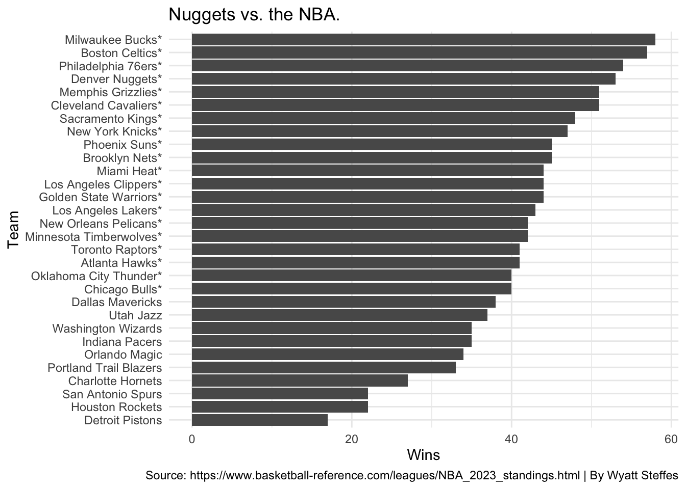
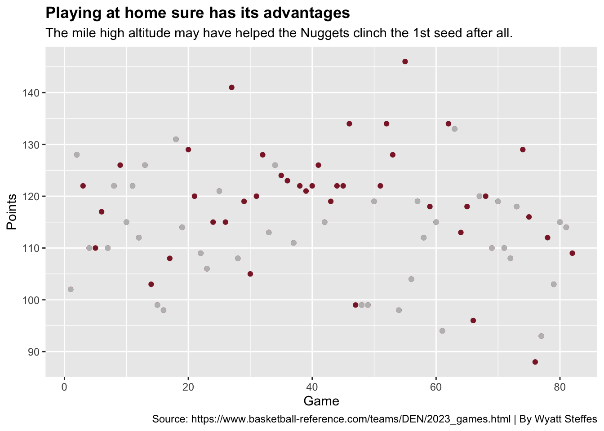

With the back-to-back MVP looking to win his team’s first NBA championship, the Denver Nuggets are one of the hottest teams in the NBA right. They’re also the highest team in the league, and I’m not talking about Mary Jane. I’m talking about their elevation at 5,280 feet above sea level. This is one of the biggest marketing ploys used in Denver, but what if this actually works for the home team?
The Nuggets currently have a home record of 34-7 this regular season, yet that wasn’t the best one in the league. The Memphis Grizzlies finished with a home record of 35-6 this regular season. On paper that doesn’t sound too bad. Let’s see how they compared to the rest of the league this season.
The * notes that the team made the playoffs this season.
Code
library(tidyverse)high <-read_csv("/Users/wyattsteffes/Desktop/High Text.csv")den <- high %>%filter(Team =="Denver Nuggets") ggplot() +geom_bar(data=high, aes(x=reorder(Team, W), weight=W)) +geom_bar(data=den, aes(x=reorder(Team, W), weight=W,color="#0E2240")) +scale_fill_manual(values=c("lightgrey")) +labs(x="Team", y="Wins", title="Nuggets vs. the NBA.", caption="Source: https://www.basketball-reference.com/leagues/NBA_2023_standings.html | By Wyatt Steffes") +theme(plot.title =element_text(face="bold")) +coord_flip() +theme_minimal()

4th in the league huh? Not too bad. You would think that playing at 5,280 feet above sea level would make a major dent in these rankings. That’s still a great place to be for the upcoming playoffs. In order to see how the Nuggets got the 4th most wins in the league, we have to see the path they took to get here.
The Nuggets were predicted to have one of the easiest schedules out of the entire league at the beginning of the season. This worked well in their favor and helped them secure a comfy home court advantage for the first round of the playoffs. The Nuggets had a total of 82 games this season, with 42 being at home. Let’s take a look at how many points they scored during each game this season, especially during their home games at Ball Arena.
# A tibble: 6 × 15
G Date Start…¹ ...4 ...5 ...6 Oppon…² ...8 ...9 Tm Opp W
<dbl> <chr> <chr> <lgl> <chr> <chr> <chr> <chr> <chr> <dbl> <dbl> <dbl>
1 1 Wed Oct… 9:00p NA Box … @ Utah J… L <NA> 102 123 0
2 2 Fri Oct… 10:00p NA Box … @ Golden… W <NA> 128 123 1
3 4 Mon Oct… 10:00p NA Box … @ Portla… L <NA> 110 135 2
4 7 Sun Oct… 9:30p NA Box … @ Los An… L <NA> 110 121 4
5 8 Thu Nov… 8:00p NA Box … @ Oklaho… W <NA> 122 110 5
6 10 Mon Nov… 9:30p NA Box … @ San An… W <NA> 115 109 7
# … with 3 more variables: L <dbl>, Streak <chr>, Notes <lgl>, and abbreviated
# variable names ¹`Start (ET)`, ²Opponent
Code
ggplot() +geom_point(data=dub, aes(x=G, y=Tm), colour="#8B2131") +geom_point(data=dub2, aes(x=G, y=Tm), colour="grey") +labs(x="Game", y="Points", title="Playing at home sure has its advantages", subtitle="The mile high altitude may have helped the Nuggets clinch the 1st seed after all.", caption="Source: https://www.basketball-reference.com/teams/DEN/2023_games.html | By Wyatt Steffes")+theme(plot.title =element_text(face="bold"))

Huh. There doesn’t seem to be a substantial difference between the home game and away game scoring this season. While there are a few games that stand out from the rest, there is no substantial difference between venues.
There is one more factor we can look at to see if the mile high altitude really had an effect. Let’s look at one of the greatest Nuggets players of all time and one of the biggest horse racing enthusiasts ever: Nikola Jokic.
Jokic is the back-to-back regular season MVP and is on track to have another record-breaking season this year. In order to see how the altitude affects him, let’s look at his most popular shooting spot. When he’s not making the most amazing passes ever, Jokic loves to shoot inside the 3-point-line. If he’s so hot in the paint, he should be putting up huge numbers outside of Ball Arena, due to training more consistently at a mile high compared to the rest of the league.
# A tibble: 6 × 30
Rk G Date Age Tm ...6 Opp ...8 GS MP FG FGA
<dbl> <dbl> <date> <chr> <chr> <chr> <chr> <chr> <chr> <tim> <dbl> <dbl>
1 1 1 2021-10-20 26-243 DEN @ PHO W (+1… 1 34:43 13 22
2 2 2 2021-10-22 26-245 DEN <NA> SAS W (+6) 1 33:37 14 19
3 3 3 2021-10-25 26-248 DEN <NA> CLE L (-1… 1 34:57 9 15
4 4 4 2021-10-26 26-249 DEN @ UTA L (-1… 1 15:00 8 9
5 5 5 2021-10-29 26-252 DEN <NA> DAL W (+3… 1 25:15 5 9
6 6 6 2021-10-30 26-253 DEN @ MIN W (+2) 1 36:40 10 23
# … with 18 more variables: `FG%` <dbl>, `3P` <dbl>, `3PA` <dbl>, `3P%` <dbl>,
# FT <dbl>, FTA <dbl>, `FT%` <dbl>, ORB <dbl>, DRB <dbl>, TRB <dbl>,
# AST <dbl>, STL <dbl>, BLK <dbl>, TOV <dbl>, PF <dbl>, PTS <dbl>,
# GmSc <dbl>, `+/-` <dbl>
Code
home2 <- home%>%select(Rk, Opp, ...6, FGA, FG) home2 %>%gt() %>%cols_label(FGA ="Attempted Field Goals",FG ="Field Goals Made",...6 ="Location" ) %>%tab_header(title ="How well did Jokic shoot this season?",subtitle ="The 2-time MVP may have used the mile high altitude to his teams advantage. Even against the lowest geograpical team, the New Orleans Pelicans, the Joker dominated in the paint." ) %>%tab_style(style =cell_text(color ="black", weight ="bold", align ="left"),locations =cells_title("title") ) %>%tab_style(style =cell_text(color ="black", align ="left"),locations =cells_title("subtitle") ) %>%tab_source_note(source_note =md("**By:** Wyatt Steffes | **Source:** https://www.basketball-reference.com/players/j/jokicni01/gamelog/2022") ) %>%tab_style(locations =cells_column_labels(columns =everything()),style =list(cell_borders(sides ="bottom", weight =px(3)),cell_text(weight ="bold", size=12) ) )
How well did Jokic shoot this season?
The 2-time MVP may have used the mile high altitude to his teams advantage. Even against the lowest geograpical team, the New Orleans Pelicans, the Joker dominated in the paint.
It seems he’s the same great shooter anywhere he goes. No matter the altitude, the Joker will find a way to the basket. While the mile high marketing tactic looks great on paper, it seems to have very little effect on those who travel to Denver to play. Despite that, it’s still a great way to intimidate any opponent coming to the mile high city.